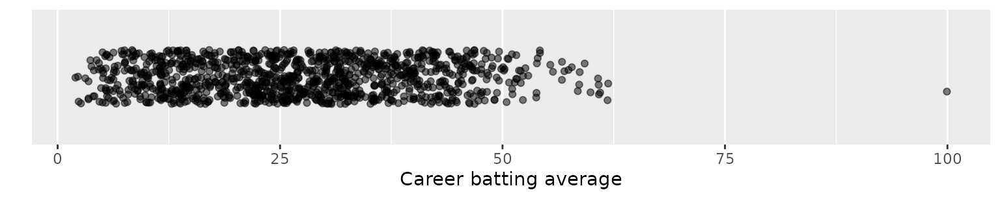
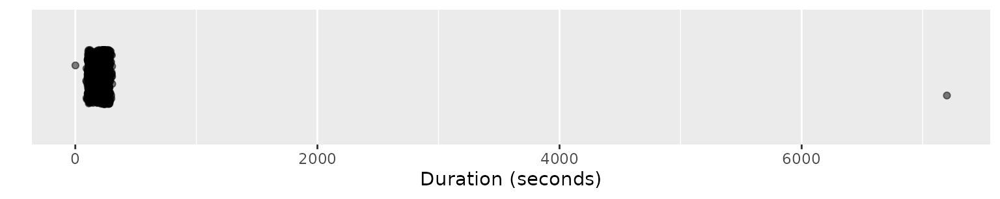
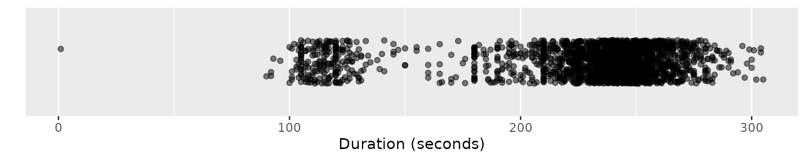
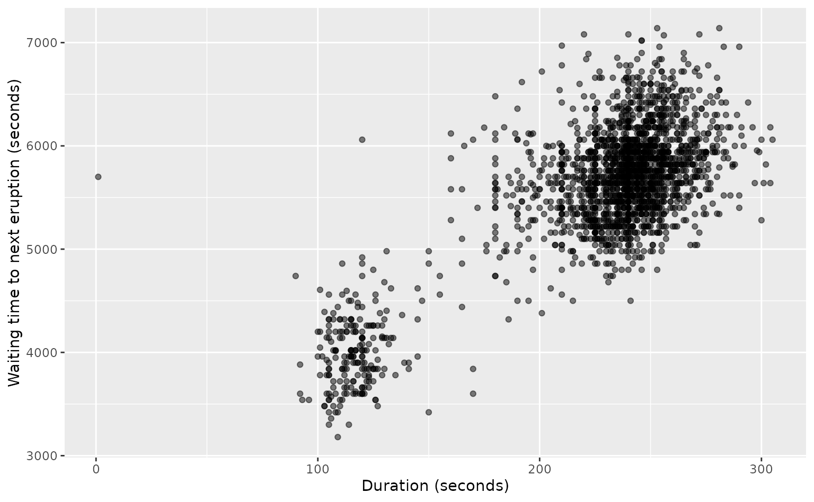
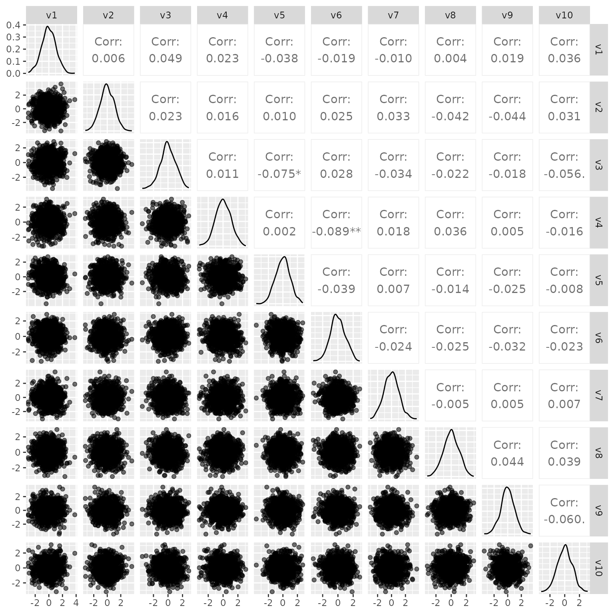

Data analysis is about finding the stories hidden in the mass of information that make up a data set. Usually we are interested in understanding the major patterns — the relationships that hold true for most of the data. But sometimes we need to look at the weird observations — those that don’t follow the crowd and behave differently. We call these weird observations “anomalies”. They are the mavericks in the data, and in this book, they are what we find interesting.
Anomalies are often a nuisance. For example, they may be simply recording errors that are contaminating our data. We want to find them, remove them, and get on with analysing the bulk of the data. At other times, anomalies are the observations we care about. They tell us things that might otherwise go unnoticed if we only consider how the majority of observations behave. Whether we want to remove them or study them, we first need to find them.
1.1 Definitions
An anomaly is an observation that behaves differently from the bulk of the data. Anomalies are also called “outliers”, “novelties”, “deviants”, “abnormalities” or “discordants”. I prefer to use “anomalies” as it is a more general term than outliers, and it is more widely used than the other options.
An old definition due to Barnett and Lewis (1978) states
an outlier in a set of data [is] an observation (or subset of observations) which appears to be inconsistent with the remainder of that set of data.
An outlier is an observation which deviates so much from the other observations as to arouse suspicions that it was generated by a different mechanism.
A more mathematical definition is that anomalies are observations that come from a different probability distribution than the majority of observations. However, that does not help much as it is always possible to define a mixture probability distribution which includes several component distributions. There are also some probability distributions with “heavy tails”, so genuine observations can occur a long way from the bulk of the data.
So rather than trying to define anomalies more precisely, we shall deliberately proceed with the vague and subjective approach where anomalies are suspiciously different or inconsistent with the rest of the data.
I will sometimes use the term “outlier” to mean an anomaly that lies at the outer edges of a data set. Other anomalies are actually “inliers”, and lie well within the data set. Some papers use the term “inlier” to denote any point that is not an outlier. However, we shall use the earlier definition of “inlier”, meaning an observation that is an anomaly but which is surrounded by genuine observations.
Rejecting anomalies
Many analysts have thrown away apparent anomalies because they were assumed to be errors. There are even formal statistical tests to tell you which observations should be ignored. In my view, this is a dangerous practice. No anomalies should be removed unless you understand what led to their unusual behaviour in the first place. Often the most interesting observations are the ones that appear anomalous. They are the ones that tell us something new and unexpected, so we should not be too quick to reject them.
Sometimes we may want to use methods that are robust to anomalies, so that we can ignore them without worrying about their effect on the analysis. But this is not the same as removing them. Even when we use robust methods, it is still worth investigating any observations that appear anomalous, in order to fully understand the variation in the data.
How NASA didn’t discover the hole in the ozone layer
There is a widespread myth that NASA did not discover the hole in the ozone layer above the Antarctic because they had been throwing away anomalous data that would have revealed it. This is not true, but the real story is also instructive (Pukelsheim 1990; Christie 2001, 2004).
The “ozone hole” refers to low levels of ozone in the atmosphere above Antarctica and surrounding areas. NASA have been collecting satellite data on Antarctic ozone levels using a Total Ozone Mapping Spectrometer (TOMS) since 1979, while British scientists have collected ozone data using ground sensors at the Halley Research Station, on the edge of the Brunt Ice Shelf in Antarctica, since 1957. Figure 1.1 shows average daily values from the NASA measurements in blue, and from the British observations in orange. There is a clear downward trend in the British data, especially from the late 1970s, which is confirmed with the NASA data. So why wasn’t the “ozone hole” discovered until 1985?
Figure 1.1: Observations of Antarctic ozone levels since 1957, measured in Dobson units (DU). Observations are mean daily values from October each year. Ground observations are from Halley Research Station, while satellite observations were obtained using a Total Ozone Mapping Spectrometer (TOMS). The satellite data were obtained from Leslie R Lait (NASA), while the Halley ground observations were obtained from Jonathan Shanklin (British Antarctic Survey). The horizontal line shows the threshold of 180 DU, used by NASA to determine when the ozone level was unusually low.
The British scientists had noticed the low ozone values as early as 1981, but it took a few years for the scientists to be convinced that the low values were real and not due to instrument problems, and then there were the usual publication delays. Eventually, the results were published in Farman, Gardiner, and Shanklin (1985).
Meanwhile, NASA was flagging observations as anomalous when they were below 180 DU (shown as a horizontal line in Figure 1.1). As is clear from the figure, this is much lower than any of the plotted points before the early 1980s. However, the 180 threshold was used for the daily measurements, which are much more variable than the monthly averages that are plotted. Occasionally daily observations did fall below 180, and so it was a reasonable threshold for the purpose of identifying instrument problems.
In fact, NASA had checked the unusually low TOMS values obtained before 1985 by comparing them against other available data. But the other data available to them showed ozone values of about 300 DU, so it was assumed that the satellite sensor was malfunctioning. The British Halley data were not available to them, and only after the publication of Farman, Gardiner, and Shanklin (1985) did the NASA scientists realise that the TOMS results were accurate.
In 1986, NASA scientists were able to confirm the British finding, also demonstrating that the ozone hole was widespread across the Antarctic (Stolarski et al. 1986).
This example reveals some lessons about anomaly detection:
The NASA threshold of 180 was based on daily data, and was designed to identify instrument problems, not genuine systematic changes in ozone levels. The implicit assumption was that ozone levels varied seasonally, but that otherwise the distribution of observations was stable. All anomaly detection involves some implicit assumptions like this, and it is well to be aware of them.
Sometimes what we think are anomalies are not really anomalies, but the result of incorrect assumptions.
Often smoothing or averaging data will help to reveal issues that are not so obvious from the original data. This reduces the variation in the data, and allows more systematic variation to be uncovered.
Always plot the data. In this case, a graph such as Figure 1.1 would have revealed the problem in the late 1970s, but it seems no-one was producing plots like this.
1.2 Approaches to anomaly detection
We will take a probabilistic perspective on anomaly detection, where we aim to estimate the likelihood of each observation. Consequently, we will need to introduce (or revise) some material on probability distributions and related tools in Chapter 2 and Chapter 3.
Z-scores and statistical tests
The early days of anomaly detection involved methods based on statistical tests. Typically, the data were assumed to come from some underlying probability distribution, and then observations were declared outliers if they appeared to be inconsistent with this assumption. By far the most popular of these methods are based on the Normal distribution and use z-scores. Even today, such methods are extremely widely used. These are discussed in Chapter 4.
Boxplot methods
The second half of the 20th century witnessed the advent of computing, which allowed more sophisticated exploratory data analysis to be developed, including boxplots. Most readers will be familiar with boxplots, which provide a simple and effective way to visualise the distribution of a variable, and are often also used for anomaly detection. Such methods are discussed in Chapter 5.
Distance and density-based methods
Modern tools for anomaly detection can be roughly divided into two groups: those based on densities and those based on distances. Distance-based tools compute the pairwise distances between observations and identify anomalies as those points that are far from other points. Density-based tools compute the probability density at each observation and identify anomalies as those points with very low density. The two ideas are closely related because density estimates are usually based on distances to other observations; for example, a density estimate at a point may be a function of the distances between that point and all other observations.
Density-based methods are discussed in Chapter 6, while distance-based methods are the subject of Chapter 7.
Statistical vs machine learning approaches
Anomaly detection has a long history in the statistics literature, including all of the approaches developed in the 20th century, and many of the newer density-based approaches.
Recently, computer scientists have turned their attention to the problem of anomaly detection, especially as data sets have grown in size and complexity. Anomaly detection arises in cyber security systems (where intrusions are identified as anomalies), in credit-card fraud (where unusual buying patterns are anomalous) and in remote sensing (where unusual changes in land use are anomalies). Machine-learning approaches have been developed to address these problems, mostly using distanced-based methods, although some important contributions to the density-based methods have also appeared in the machine learning literature.
In this book, I make no attempt to distinguish methods as “statistical” or “machine-learning”. The distinction is largely about the training of the researchers, or the journals in which they publish, and has little to do with the methods themselves. In any case, the two communities have been slowly moving closer together, with computer scientists taking a more probabilistic perspective than previously, and statisticians taking a more computational and algorithmic approach than their forebears. Now there is now considerable interaction and overlap between these communities, and continuing to label methods as “statistical” or “machine-learning” is unhelpful.
Supervised vs unsupervised approaches
Some books and papers distinguish “supervised anomaly detection” from “unsupervised anomaly detection”. In the former case, anomalies are identified using human input and then a model or algorithm is employed to learn how to identify new anomalies contained within new data. I do not regard this as anomaly detection and it will not be covered in this book. It is possible, for example, that what a human labels as “anomalous” is not anomalous in a statistical sense. What is called “supervised anomaly detection” is actually a classification problem, where the aim is to mimic the human who labelled the training set. In that case, different tools are employed.
In this book, we will only consider unsupervised problems. That is, we have no idea a priori what observations are anomalous, and there is no “right” answer.
Testing anomaly detection algorithms
That makes it difficult to measure how good an anomaly detection algorithm performs. If we don’t know the right answer, we can’t know if an algorithm has found the true anomalies. There are three solutions to this problem that are often employed when testing anomaly detection algorithms.
Synthetic data: We can use synthetic data that has been deliberately contaminated with a small number of known anomalies. This approach allows us to study the sensitivity of an algorithm to anomalies — how anomalous does an observation have to be before it is detected? A drawback to this approach is that synthetic data is often simpler and neater than real data, making the anomaly detection task easier than it is in reality.
Human labelled: We can use real data where a human has labelled some of the observations as anomalous. As noted above, this only works when the human has correctly and completely labelled the anomalies. It also requires that what a human considers an anomaly is also anomalous in a statistical sense.
Downsampled category: We can use real data that contains a categorical variable taking two label values. One of the labelled categories is downsampled and the corresponding observations form the anomalous subset. This approach is useful in obtaining large sets of realistic data, as it takes little time to create the data set. However, it requires that the observations labelled anomalies are different in some way from the other observations (apart from their label).
In this book, we will use data sets of each type when testing different anomaly detection methods. Section 1.4 discusses the main examples we will be using throughout the book.
1.3 Spurious anomalies and undetected anomalies
Spurious anomalies occur when a true observation is identified as anomalous, while undetected anomalies occur when an anomalous observation is not detected. Thus, when our purpose is anomaly detection, an undetected anomaly is a “false negative” while a spurious anomaly is a “false positive”. We can only really be sure about which observations are spurious or undetected anomalies when the data are synthetic. However, in some real data examples, there are such extreme anomalies that we will proceed under the assumption that we know that these are true anomalies.
In some applications, we will be less interested in detecting anomalies than in ranking observations according to their degree of “anomalousness”. For example, we may have a limited team of human analysts who can investigate a small number of observations, and we want to make sure that they investigate the most anomalous observations. Then it is important to compute an anomaly score, so we can rank the observations according to their scores, and our analysts can look at the observations with the highest scores.
In fact, anomaly scores often underpin the algorithms that are used to detect anomalies. The algorithms compute a score for each observation, and then identify the observations with scores above some threshold as the anomalies. So we will often be talking about anomaly scores, even when we are really interested in detecting anomalies.
1.4 Data sets
Test cricket batting data
Cricket is a popular sport in England, India, Australia, and other countries which had strong ties to England during the 19th and 20th centuries. The cricket_batting data contains summary statistics for all 3754 men and women to have played test cricket (the traditional and long form of the game), up to 6 October 2021. Each row contains data on one player, and we will be looking for anomalies in their playing statistics.
cricket_batting
#> # A tibble: 3,754 × 15
#> Player Country Start End Matches Innings NotOuts Runs HighScore
#> <chr> <chr> <int> <int> <int> <int> <int> <int> <dbl>
#> 1 BB Cooper Australia 1877 1877 1 2 0 18 15
#> 2 C Bannerman Australia 1877 1879 3 6 2 239 165
#> 3 DW Gregory Australia 1877 1879 3 5 2 60 43
#> 4 EJ Gregory Australia 1877 1877 1 2 0 11 11
#> 5 FR Spofforth Australia 1877 1887 18 29 6 217 50
#> 6 JM Blackham Australia 1877 1894 35 62 11 800 74
#> 7 JR Hodges Australia 1877 1877 2 4 1 10 8
#> 8 NFD Thomson Australia 1877 1877 2 4 0 67 41
#> 9 TJD Kelly Australia 1877 1879 2 3 0 64 35
#> 10 TK Kendall Australia 1877 1877 2 4 1 39 17
#> # ℹ 3,744 more rows
#> # ℹ 6 more variables: HighScoreNotOut <lgl>, Average <dbl>, Hundreds <int>,
#> # Fifties <int>, Ducks <int>, Gender <chr>
Old Faithful Geyser eruptions
Data on the eruptions of the Old Faithful Geyser in Yellowstone National Park, Wyoming, USA, have been collected for about 150 years. It was named “Old Faithful” due to the relatively predictable timing and length of its eruptions. The oldfaithful data set contains data on all 2261 eruptions recorded between 1 January 2015 and 1 October 2021.
The time stamp indicates the start time of each eruption, with the other variables providing the duration of each eruption and the time to the next eruption (both in seconds).
Wine prices and quality
The wine_reviews data set contains data on 110,203 wines from 44 countries, taken from the Wine Enthusiast Magazine during the week of 15 June 2017.
wine_reviews <-fetch_wine_reviews()
wine_reviews
#> # A tibble: 110,203 × 8
#> country state region winery variety points price year
#> <chr> <chr> <chr> <chr> <chr> <dbl> <dbl> <dbl>
#> 1 Portugal Douro <NA> Quint… Portug… 87 15 2011
#> 2 US Oregon Willamette Va… Rains… Pinot … 87 14 2013
#> 3 US Michigan Lake Michigan… St. J… Riesli… 87 13 2013
#> 4 US Oregon Willamette Va… Sweet… Pinot … 87 65 2012
#> 5 Spain Northern Spain Navarra Tandem Tempra… 87 15 2011
#> 6 Italy Sicily & Sardinia Vittoria Terre… Frappa… 87 16 2013
#> 7 France Alsace Alsace Trimb… Gewürz… 87 24 2012
#> 8 Germany Rheinhessen <NA> Heinz… Gewürz… 87 12 2013
#> 9 France Alsace Alsace Jean-… Pinot … 87 27 2012
#> 10 US California Napa Kirkl… Cabern… 87 19 2011
#> # ℹ 110,193 more rows
The points variable provides a measure of wine quality based on a taster’s assessment on a scale of 0 to 100. The price is provided in $US. Other variables indicate the location of the winery and year of harvest.
Synthetic standard normal data
The n01 data set contains synthetic data on 10 variables, each generated independently from a Normal distribution with mean zero and variance one. So by definition, this data set contains no anomalies. We will add anomalies to the data when testing algorithms, in order to check that the algorithms can identify the artificial anomalies.
When there are no more than a few thousand observations, and only one or two variables, it is useful to start with simple plots that allow us to look at the observations directly with no processing or modelling to hide what is going on.
Let’s start with some examples using only one or two variables. These examples will be revisited in the next couple of chapters as we introduce new anomaly detection tools and graphics.
Example: Don Bradman’s batting averages
Don Bradman was an Australian cricketer in the first half of the 20th century, and is renowned as the best batter to ever play the game. The most common measure of a batter’s ability is their career average — the total number of runs made divided by the number of times they were dismissed. Figure 1.2 shows a strip plot of the career averages for all 1138 men and women to have played test cricket and batted more than 20 times.
Code
cricket_batting |>filter(Innings >20) |>ggplot(aes(x = Average, y =1)) +geom_jitter(width =0, alpha =0.5) +scale_y_discrete() +labs(y ="", x ="Career batting average")

Figure 1.2: Career batting averages for all men and women to have played test cricket and batted more than 20 times. The anomaly is Don Bradman, who averaged 99.94 over his career.
The points are “jittered” vertically to reduce overplotting, and made slightly transparent to show where overplotting occurs. There is an obvious anomaly on the right of the plot; this point is Don Bradman who averaged 99.94 over his career. Clearly, Don Bradman was much better than any of the other men and women who have played test cricket.
Example: Old Faithful eruption durations
Some anomalies are not so obvious, and occur within the range of the rest of the data. A good example of this is the duration of eruptions of the Old Faithful Geyser. Figure 1.3 shows the duration of all eruptions in the data set.
Code
oldfaithful |>ggplot(aes(x = duration, y =1)) +geom_jitter(width =0, alpha =0.5) +labs(y ="", x ="Duration (seconds)") +scale_y_discrete()

Figure 1.3: Old Faithful eruption durations since 2015. The large anomaly is an eruption recorded on 7 December 2015 which apparently lasted nearly two hours.
The big anomaly on the right was an eruption recorded as lasting nearly two hours on 7 December 2015. (I can find no record of this in any news media, so perhaps it is an error in the data.) This makes it difficult to see any detail in the rest of the data, so let’s omit it so we can look at the remaining data more clearly.
Code
oldfaithful |>filter(duration <7000) |>ggplot(aes(x = duration, y =1)) +geom_jitter(width =0, alpha =0.5) +labs(y ="", x ="Duration (seconds)") +scale_y_discrete()

Figure 1.4: Old Faithful eruption durations since 2015, omitting the one eruption that lasted nearly two hours.
We see that almost all of the remaining eruptions were between 100 and 300 seconds in length, with one extremely short anomalous duration of 1 second. (Again, perhaps this is an error in the recorded data.) However, the plot reveals another feature of the data. The majority of observations are between 200 and 300 seconds, with a smaller group at around 120 seconds. Few observations fall between 140 and 180 seconds. Those that do can be considered “inliers” — anomalous points that lie within the range of the rest of the data but in regions of low density.
The two clusters of observations characterise two eruption modes for the Old Faithful geyser: short durations (around 2 minutes in length) and long durations (between 3 and 5 minutes in length). There was an earthquake in 1998 which changed the distribution of durations. Before 1998, the durations were more evenly split between the two clusters, but currently the long durations are much more common.
The oldfaithful data set also contains the time between eruptions. For each row, waiting gives the time to the following eruption. This is used to predict when the next eruption will happen, based on the duration of the most recent eruption.
Code
oldfaithful |>filter(duration <7200, waiting <7200) |>ggplot(aes(x = duration, y = waiting)) +geom_point(alpha =0.5) +labs(y ="Waiting time to next eruption (seconds)", x ="Duration (seconds)")

Figure 1.5: Old Faithful eruption durations and waiting times since 2015, omitting waiting times and durations of two hours or more.
In Figure 1.5, we have plotted the duration of each eruption and the waiting time to the next eruption, after filtering some extreme waiting times (which are probably due to incomplete records), and the two-hour duration we have seen previously.
The resulting plot shows some anomalies that occur due to the combination of the two variables, although they do not appear anomalous within the data on any one of the variables. For example, there is one eruption of 120 seconds, followed by a waiting time of over 6000 seconds. Neither the waiting time nor the duration are unusual on their own, but the combination is anomalous. Similarly, there are two eruptions of 170 seconds, followed by waiting times of under 4000 seconds. Those waiting times are not particularly unusual compared to other waiting times, but they are unusual given the durations of the previous eruptions.
Example: Wine prices and quality
Figure 1.6 shows a scatterplot of data on 4,496 Syrah wines (also known as Shiraz). The review points is a measure of the quality of the wine (at least according to one taster’s palate). As expected, the price of the wine increases with the quality, although there is considerable variation, and some very expensive wines are rated of relatively low quality, while there are a few exceptional wines at bargain prices.
Figure 1.6: Wine prices and review points for Shiraz and Syrah wines.
The jittering in the horizontal direction helps reduce overplotting as points is always an integer value. This adds a small amount of random noise to the points variable, but not so much that it overlaps with the neighbouring values. The price is shown on a log scale to allow all the points to be seen more clearly.
Here the most interesting observations are the ones that have an unusual price given their points value. For example, the lowest priced wine above 95 points is a 2007 Syrah from the Rulo vineyard in the Columbia Valley, Washington. It is an anomaly given its high points value and low price, although neither the price nor the points value are particularly unusual. There are also two very expensive wines that do not have a rating to match, with points values in the low 90s. These can also be considered anomalies.
#> # A tibble: 1 × 8
#> country state region winery variety year points price
#> <chr> <chr> <chr> <chr> <chr> <dbl> <dbl> <dbl>
#> 1 US Washington Columbia Valley Rulo Syrah 2007 96 20
A similar phenomenon occurs whenever you consider additional variables. An anomaly in three dimensions may not appear anomalous in any of the 2-dimensional sets of variables. As the number of dimensions increases, there are more ways for observations to be anomalous, but it is increasingly difficult to find them.
While strip plots and scatterplots are useful for finding anomalies in small- to moderate-sized data sets with one or two numerical variables, we will need alternative tools once we have three or more variables, or a large data set, or non-numerical data.
We will consider the problem of high dimensions in Chapter 8, while various types of non-numerical data are considered in the later chapters of the book.
Example: Synthetic standard normal data
When we have many variables, showing the pairwise scatterplots in a matrix is a useful way to see a lot of information quickly. This is called a scatterplot matrix, and can be produced using the GGally package.
Figure 1.7 show the scatterplot matrix of all 10 variables in the n01 data set. Some transparency has been used to help reduce the overplotting, but with 1000 observations in each small point cloud, it is hard to see any detail other than around the edges.
Code
n01 |> GGally::ggpairs(mapping =aes(alpha =0.02))

Figure 1.7: Scatterplots of all pairs of the synthetic n01 data, where each variable has been generated from independent standard Normal distributions.
Any points that appear slightly outside the main clouds of points are not genuine anomalies, because they were generated from the same N(0,1) distribution as the rest of the data.
Barnett, V, and T Lewis. 1978. Outliers in Statistical Data. John Wiley & Sons.
Christie, M. 2001. The Ozone Layer: A Philosophy of Science Perspective. Cambridge, UK: Cambridge University Press.
———. 2004. “Data Collection and the Ozone Hole: Too Much of a Good Thing?”History of Meteorology 1: 99–105.
Farman, J C, B G Gardiner, and J D Shanklin. 1985. “Large Losses of Total Ozone in Antarctica Reveal Seasonal ClO_x/NO_x Interaction.”Nature 315 (6016): 207–10.
Hawkins, D M. 1980. Identification of Outliers. Springer.
Pukelsheim, F. 1990. “Robustness of Statistical Gossip and the Antarctic Ozone Hole.”The IMS Bulletin 19 (4): 540–45.
Stolarski, R S, A J Krueger, M R Schoeberl, R D McPeters, P A Newman, and J C Alpert. 1986. “Nimbus 7 Satellite Measurements of the Springtime Antarctic Ozone Decrease.”Nature 322 (6082): 808–11.